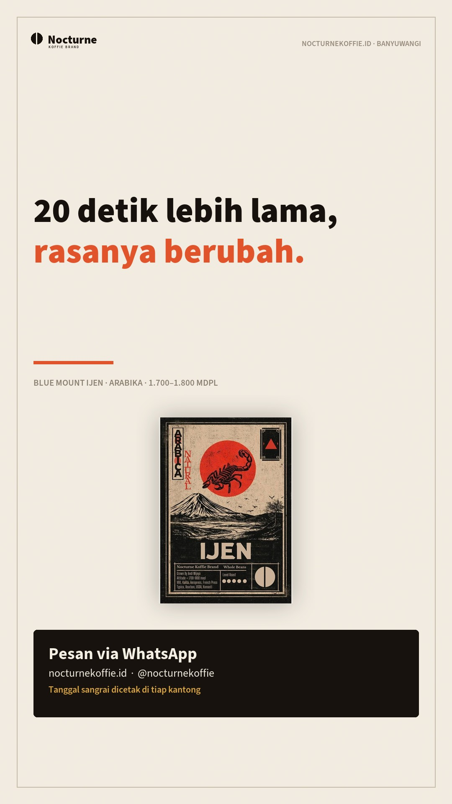
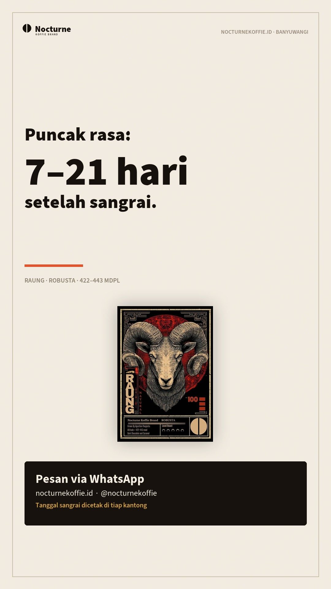
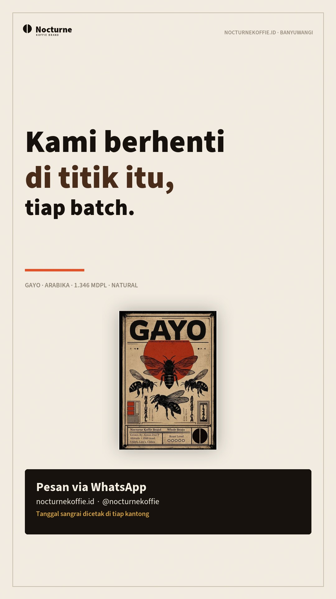
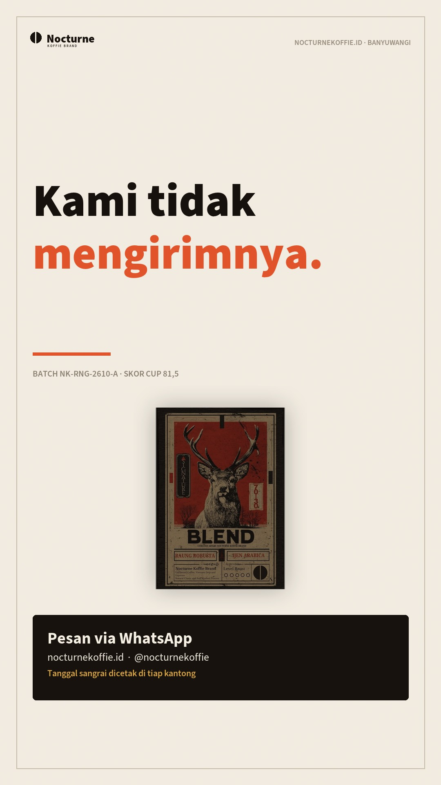
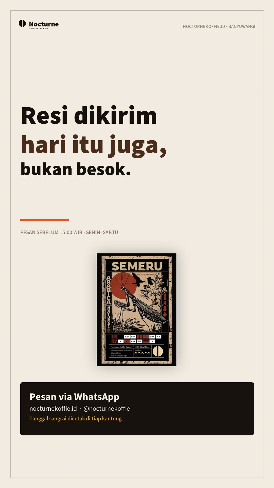

Dijalankan otomatis · 30 Oktober 2026 · 2026-10-30
Semua keluaran dibuat ulang dari berkas data: brand kit, harga grosir, 15 aset konten,
landing kampanye, dasbor riset, papan harian, lalu diperiksa mesin. Angka di halaman ini bukan hasil
ketik tangan — kalau salah, sumbernya di data/.
Gerbang ini memeriksa konsistensi, bukan kebenaran pasar. Semua lolos berarti sistem tidak bertentangan dengan dirinya sendiri.
| Pemeriksaan | Status | Hasil | Catatan |
|---|---|---|---|
| Berkas wajib | lolos | 54/54 berkas ada | — |
| Tautan lokal | lolos | 122/122 tautan menuju berkas yang ada | — |
| Struktur HTML | lolos | 15/15 halaman tag-nya seimbang | — |
| Stok semua SKU | lolos | 9/9 SKU berstatus tersedia | — |
| Produk ↔ lot | lolos | 9/9 produk punya lot aktif (blend memakai komponen) | — |
| Manifest ↔ aset | lolos | 15 item manifest · 0 berkas hilang | — |
| Brief ↔ aset | lolos | 5 brief · 0 aset tidak ditemukan | — |
| Target divisi | lolos | 29/29 KPI punya target 3 bulan | — |
| Klaim terlarang | lolos | 0 temuan di 4 halaman publik | — |
| Skrip studio | lolos | 5 skrip siap rekam · 0 masalah | — |
| Bank hook | lolos | 30 hook · 12 dipakai · 18 tersedia | — |
| Peta 50 slot | lolos | 46 otomatis · 2 manual · 2 tidak dipakai (total 50) | — |
| Kontrak desain | lolos | 6 warna inti · 10 radius · 8 aturan gerak · 8 pengecualian terdokumentasi | — |
| Anti-slop | lolos | 29 aturan · 0 kritis · 0 perhatian | — |
| Komponen gerak | lolos | 6 jenis komponen dipakai · 6 ditangani motion-ui.js | — |
| Adegan 9:16 | lolos | 5 adegan · total 9 detik masing-masing | — |
| Panggung 3D | lolos | 3 komponen dipakai · 15.8 KB CSS+JS · jatuh datar tanpa JS | — |
| Berat halaman awal | lolos | 89 KB (batas 1.500 KB) | — |
| Berat folder konten | lolos | 3.8 MB (batas 12 MB) | — |
Sesuai arahan pemilik hari ini: semua produk dianggap tersedia. Stok di bawah dihitung papan dari lot green bean × yield — bukan diketik. Ganti angka lot saat penerimaan barang nyata.
| Produk | Harga | Sisa (hitung lot) | Status situs |
|---|---|---|---|
| Gayo Single Origin · Arabika Origin · Aceh | 100 g Rp45.000 · 250 g Rp99.000 · 500 g Rp180.000 · 1 kg Rp340.000 | 7 bungkus 250 g | tersedia |
| Kintamani Single Origin · Arabika Origin · Bali | 100 g Rp40.000 · 250 g Rp90.000 · 500 g Rp180.000 · 1 kg Rp352.000 | 35 bungkus 250 g | tersedia |
| Blue Mount Ijen Single Origin · Arabika Origin · Banyuwangi | 100 g Rp39.000 · 250 g Rp83.000 · 500 g Rp152.000 · 1 kg Rp297.000 | 48 bungkus 250 g | tersedia |
| Semeru Single Origin · Arabika Origin · Malang | 100 g Rp36.000 · 250 g Rp86.000 · 500 g Rp149.000 · 1 kg Rp287.000 | 14 bungkus 250 g | tersedia |
| Arjuno Single Origin · Robusta Origin · Malang | 100 g Rp25.000 · 250 g Rp42.000 · 500 g Rp78.000 · 1 kg Rp148.000 | 32 bungkus 250 g | tersedia |
| Raung Single Origin · Robusta Origin · Banyuwangi | 100 g Rp23.000 · 250 g Rp46.000 · 500 g Rp80.000 · 1 kg Rp152.000 | 44 bungkus 250 g | tersedia |
| Ijen Excelsa Single Origin · Excelsa Origin · Banyuwangi | 100 g Rp26.000 · 250 g Rp53.000 · 500 g Rp97.000 · 1 kg Rp185.000 | 27 bungkus 250 g | tersedia |
| Blend 70/30 Signature Blend · Signature Blend · Raung × Ijen | 100 g Rp30.000 · 250 g Rp55.000 · 500 g Rp90.000 · 1 kg Rp170.000 | 64 bungkus 250 g | tersedia |
| Blend 60/40 Signature Blend · Signature Blend · Raung × Ijen | 100 g Rp33.000 · 250 g Rp57.000 · 500 g Rp105.000 · 1 kg Rp195.000 | 74 bungkus 250 g | tersedia |
| Peta Rasa Paket · 3 × 100 g | Rp79.000 | paket (dari komponen) | tersedia |
| Jelajah Arabika Paket · 3 × 100 g | Rp109.000 | paket (dari komponen) | tersedia |
Target dari data/divisi.json, aktual dihitung dari berkas transaksi.
Bulan berjalan baru dimulai — "di bawah" pada awal bulan itu normal.
| Ukuran | Target | Aktual | Satuan | Status |
|---|---|---|---|---|
| D1 · Produksi & QC | ||||
| Batch tercatat | ↑ 4 | 4 | batch | tercapai |
| Batch ditolak | ↓ 15 | 25 | % | di bawah |
| Skor cupping rata-rata | ↑ 84 | 84,1 | poin | tercapai |
| Selisih status stok situs | ↓ 0 | 0 | SKU | tercapai |
| D2 · Penjualan & CRM | ||||
| Order retail | ↑ 25 | 3 | order | di bawah |
| Nilai order rata-rata | ↑ Rp130.000 | Rp132.333 | Rp | tercapai |
| Langganan aktif | ↑ 3 | 0 | akun | di bawah |
| Akun B2B aktif | ↑ 1 | 0 | akun | di bawah |
| D3 · Marketing & Pertumbuhan | ||||
| Konten terbit | ↑ 16 | 0 | post | di bawah |
| Konten terlambat | ↓ 0 | 0 | post | tercapai |
| Chat masuk | ↑ 40 | 11 | chat | di bawah |
| Followers IG | ↑ 300 | 187 | akun | di bawah |
| Referensi kompetitor dianalisis | ↑ 20 | 0 | post | di bawah |
| Kata kunci terpetakan | ↑ 12 | 12 | frasa | tercapai |
| D4 · Kreatif & Media | ||||
| Video jadi | ↑ 8 | 5 | video | di bawah |
| Carousel jadi | ↑ 4 | 7 | set | tercapai |
| Aset siap tayang | ↑ 12 | 15 | aset | tercapai |
| Klip mentah minggu ini | ↑ 30 | — | klip | tanpa data |
| Brief dari riset | ↑ 4 | 5 | brief | tercapai |
| D5 · Operasional & Logistik | ||||
| Order perlu diproses | ↓ 0 | 2 | order | di bawah |
| Resi belum dikirim | ↓ 0 | 2 | order | di bawah |
| Order telat > 1 hari | ↓ 2 | 2 | order | tercapai |
| D6 · Keuangan | ||||
| Omzet retail | ↑ 3,2 jt | Rp397.000 | Rp | di bawah |
| Margin terburuk | ↑ 35 | 42,4 | % | tercapai |
| Break-even | ↓ 35 | 35 | order/bulan | tercapai |
| Biaya tetap | ↓ 1,3 jt | 1,3 jt | Rp/bulan | tercapai |
| D7 · Brand & Legal | ||||
| Dokumen legal selesai | ↑ 5 | 1 | dokumen | di bawah |
| Dokumen tertunda | ↓ 3 | 8 | dokumen | di bawah |
| Klaim melanggar | ↓ 0 | — | temuan | tanpa data |
Dirender dari label produk + data batch. Ini grafik & teks, bukan footage sangrai — footage asli selalu menang bila tersedia.





| Outlier teratas | Kopi Rp50 ribu vs Rp150 ribu — bedanya di mana? | 2.9× |
| Pola dominan | Diagnosis masalah → sudut: Diagnosis masalah | 1 post |
| Komentar dianalisis | 12 kutipan (≤ 24 kata, tanpa identitas) | pertanyaan |
| Kata kunci | 12 frasa · dijawab halaman 58% · 5 celah | confidence belum ada data asli |
Kerangka “tim social media 10 folder / 50 agent” dijalankan sebagai fungsi deterministik: tiap tahap membaca berkas, menghitung, menulis keluaran. Tidak ada agent LLM yang menagih token per post.
| Pemetaan 50 slot | 46 otomatis · 2 manual · 2 sengaja tidak dipakai | 10 tahap |
| Bank hook | 30 hook · 18 belum dipakai · film pertama: “Kopi pahit padahal baru beli? Cek tiga hal ini.” | aset dicek ke manifest |
| Skrip | 5 dari 5 siap rekam · format 9 detik (hook 3s + 2 bukti + CTA) | cek suara ≥ 88 |
| Keputusan minggu ini | dobel: Perbandingan A vs B · hentikan: Tiga kesalahan menyimpan kopi, Proses sangrai 12 menit dalam 20 detik · uji: Kopi pahit padahal baru beli? Cek tiga hal ini. | dari data referensi |
| Outlier & kreator | 23 post dalam ceruk · 1 kreator lolos syarat ≥2 outlier | confidence belum ada data asli |
| Cek pemakaian ulang | 0 hook nyaris duplikat · 0 skrip mirip jadwal terbit | brief Senin |
data/biaya.json masih asumsi (mempengaruhi HPP, margin, break-even) ·
tonase lot ditambah hari ini atas arahan "semua tersedia", bukan hasil penerimaan barang ·
27 baris riset masih berlabel contoh ·
8 dokumen legal belum selesai · belum ada unggahan ke IG/TikTok/marketplace dari sistem ini.Tujuh repo desain dari post @thegreatest_sv diterapkan sebagai komponen
vanilla, kontrak token, dan audit — bukan sebagai library tambahan. Lima dipakai, satu diganti
prinsipnya (Figma), satu tidak dipakai (Blender).
| Repo dipakai | 7 repo · 4 komponen vanilla · 5 adegan 9:16 | 0 dependency baru |
| Audit anti-slop | 29 aturan diperiksa mesin dari 62 antipattern · 0 kritis · 0 perhatian | 7 catatan |
| Pengecualian brand | palet krem, font, ukuran headline: dipertahankan dengan alasan tertulis
di data/design-system.json | 8 keputusan |
| Adegan siap rekam | Kopi pahit padahal baru beli? Cek tiga hal ini. · dst. (5 file HTML, timeline 9 detik per adegan) | rekam layar / ffmpeg |
| Yang tidak ada | Figma, Blender, encoder video, GSAP — ditulis apa adanya, tidak diklaim | batas |
| Situs | katalog 9 SKU + 2 paket, semua tersedia |
| Papan harian | peringatan, target divisi, stok, margin, QC, riset |
| Landing kampanye | konten kreator + UTM WhatsApp |
| Hub konten | 15 aset + caption siap salin |
| Dasbor riset | outlier, pola, komentar, kata kunci, brief |
| Studio konten | 10 tahap: niche → outlier → hook → skrip → brief Senin |
| Lab gerak | komponen gerak, 5 adegan 9:16, ringkasan audit anti-slop |
| Audit anti-slop | 29 aturan, pengecualian brand, yang tidak bisa diperiksa mesin |
| Brand kit | 9 label 70×100 mm, lembar A4, logo, OG card |
| Penawaran B2B | 4 tier harga grosir + alur kerja |
| Laporan periksa (markdown) | versi teks untuk dibaca cepat |